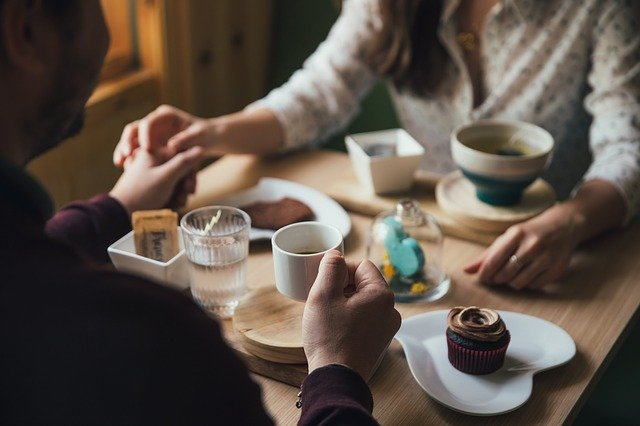

O nosso espaço
A arquitetura e o design pitoresco
A arquitetura do nosso espaço é fácilmente identificável e o design pitoresco que escolhemos é descontraído e acolhedor; lembra a praia, os dias quentes e os encontros com amigos e família.


Espaço amplo para confraternização
Dispomos de bastantes mesas, confortáveis, com diferentes configurações; ideal para juntar a família ou os amigos.

Mesas privativas e acolhedoras
Se a escolha é por uma refeição a dois, romântico com partilha de sentimentos à mesa, também aqui pode encontrar a privacidade necessária para disfrutar de momentos únicos.